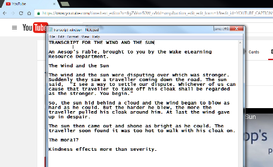

Creating Accessible YouTube Videos
Module III: Captioning without a Script
Module III: Captioning without a Script
In Module III, we'll take a look at a second method of captioning your YouTube videos; captioning without a script. Though creating a script is always recommended, sometimes it's not always possible due to time or other constraints. Compared to the first method of captioning, captioning without a script can be a little more time-consuming; however, the results will be just as accurate and accessible.
By the end of this module, you will be able to:
- produce a video transcript using YouTube's transcription editor.
- create a transcript file.
- convert a video transcript into captions by syncing.
- appriase captions for quality by checking for speaker changes, music notations, and important sounds.
- analyze transcript file with Quality Transcript checklist to ensure quality assurance.
Preparing for this Lesson
This week, you will work with an Aesop's fable. Before continuing this lesson, you will need to:
- select and download one of the two videos located in this week's Lesson folder.
- upload the video to your YouTube account. If you need to review how to upload the video to your account, please:
- watch Creating Accessible YouTube Videos: Uploading a Video (opens new window) or
- read Transcript of Accessible YouTube Videos: Uploading a Video (text).
YouTube's Transcription Interface
In this module, you will transcribe the fable you selected and upload it to YouTube. To transcribe it, you will listen to the video and then type what you hear. YouTube's Transcription Editor has several features that help make transcription an easier process.
In addition to the video player, the Transcription Editor contains:
- Transcription Field. This is the area where the text you type will appear.
- Back one second button. Pressing the Back on second button will rewind the video by one second. This is often useful for listening to a word or two over again for clarification. To help keep momentum, as you type, you can press the Tab key on your keyboard to select the Back one second button and the press Spacebar to activate it. The cursor will jump back to the Transcription Field.
- Pause/Play button. If you need to pause the video to catch up, the Play/Pause button will stop it. To keep momentum, press Tab twice and then the Spacebar.
By default, the Pause video while typing option is checked. Keep this option selected so that the video will stop when you type.
Transcribing a Video
The transcription process can be divided into three phases:
- In the first phase, play the video to become familiar with it. It'll be helpful to know what to expect in terms of the words and phrases the speaker uses. Make note of whether or not the video has music, changes in speaker, and/or sound effects. You won't include that information during these phases, but it can help save some time later if you recognize ahead of time that you'll need to make notations for these elements.
- In the second phase, you'll transcribe the video. To help you manage the listening/typing process, YouTube pauses the video as soon as you begin to type and then restarts the video when typing ceases. On the next page, we'll take a closer look at how this works.
- In the third phase, you'll watch the video one more time to make revisions and edits so that you can then save the transcript.
Watch the video, below, to learn how to use the three phases to transcribe a video in YouTube.
Practice Activities
- Transcribe the video you uploaded to YouTube.
- When the transcription is complete, please do NOT yet press Set Timings to sync the transcript. Instead, move on to the next page of this lesson.
Producing a Transcript
In Module I, you learned that a transcript is a text document. We'll copy and paste the text you typed in the Transcription Editor to create that document.
To Create a Transcript:
- Place the cursor anywhere inside the Transcription Editor. On your keyboard, press CTRL+A (or cmd+A on a Mac) to highlight all of the text.
- Open your computer's text editor (Windows Notepad or Apple's TextEdit).Type a title for the transcript.

- Press CTRL+P (or cmd + P on a Mac) to paste the transcription text.

- Add notations for changes in speaker, music, and other sound effects.
- Save the transcript.
Practice Activity
Create a transcript, and save it in a location that will make it easy to find when you need it.
Quality Assurance (QA)
QA for Captions
When the captions have synced, provide quality assurance to ensure they are accurate. As you learned in Module II, quality assurance means you'll make captioning notations for music, changes in speaker, and sound effects that are important to the listener's comprehension of the content. Follow the procedure for Module II to add additional captioning boxes.

QA for Transcripts
To provide quality assurance for transcripts, you may need to rewatch the video one more time to determine exactly where to add the notations for music, changes in speaker, and sound effects.
A Note about Automatic Captioning
If you've turned on a video's captions and noticed that they seemed a little inaccurate, then you're familiar with YouTube's automatic captioning (or autocaptioning) feature. YouTube can use speech recognition technology to automatically create captions; however, the quality of the captions depend on a number of factors, including microphone quality, background noise, regional accents, and other elements that can be difficult for the scanning software to parse.
Additionally, autocaption does not produce punctuation, nor does it consistently capitalize. For these reasons, autocaptioned videos should not be considered accessible. They can; however, be considered good rough drafts, but they will always need to be edited.
To learn more, watch the video below:
Transcript of Creating Accessible YouTube Videos: Correcting YouTube's Autocaptions (text)
Assignment
- Provide quality assurance for your selected video and the video's transcript.
- Upload your transcript in Blackboard and include the URL to your video in the Student Comments box.
- Take the Module III Quiz. It is on the next page.
Quiz
Click Quiz Group to take the three question quiz for this module.